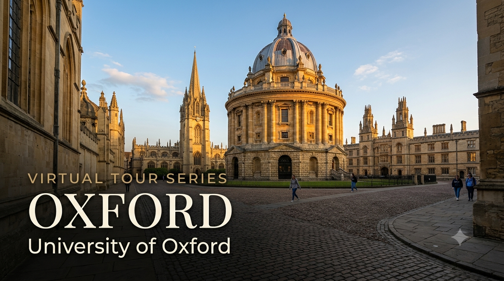

University Spotlight: Oxford — Virtual Tour Guide

I'm delighted to share the fourth edition of the University Virtual Tour Series — a curated resource to help your child explore some of the world's leading universities from the comfort of home. Oxford is one of the most historic and academically distinctive institutions in the world — its tutorial-based teaching system sets it apart from every other university. Students from both the CBSE and Cambridge programmes will find this resource relevant.
I strongly recommend that parents of Grade 9 and above students make the time to visit at least one university — Oxford, a local university in India, or any institution of your choice. A physical visit gives your child something no virtual tour can replicate: they will see the infrastructure and facilities with their own eyes, observe how professors engage with students in live classrooms, and most importantly, spend time talking to existing students about their day-to-day experience. For Oxford specifically, the tutorial system — one-on-one or small-group sessions with world-leading academics — is something no website can fully convey. If you'd like guidance planning a visit, feel free to get in touch.
Oxford Admission Requirements — CBSE and Cambridge A Level
The table below summarises what Oxford officially requires for students applying through each pathway. Oxford's admission process is among the most rigorous in the world — grades are a threshold, not a guarantee. Reach out for subject-specific strategy and admissions test preparation guidance.
| Requirement | CBSE Grade 12 | Cambridge A Level |
|---|---|---|
| Qualification | Indian Standard 12 — CBSE Board; strong academic performance in relevant subjects | Cambridge International A Level; 3 A Levels minimum; 4 accepted but not required |
| Typical Academic Offer | 90–95%+ aggregate in top 5 subjects; subject-specific marks equally important | A*A*A to AAA depending on course; most competitive courses (Law, Medicine, PPE) require A*AA or A*A*A |
| English Proficiency — IELTS | IELTS 7.0 overall, minimum 6.5 per component; OR Oxford's own test | Generally waived for Cambridge A Level students who studied in English; confirm with department |
| Application Portal | UCAS — deadline 15 October (earlier than most UK universities) | UCAS — same deadline of 15 October |
| Personal Statement | 4,000 characters via UCAS; strongly subject-focused; Oxford expects evidence of reading beyond the syllabus | Same format — but Oxford tutors read for academic passion and independent inquiry |
| Admissions Tests | Most subjects require a test: LNAT (Law), MAT (Mathematics), PAT (Physics), TSA (PPE, History), BMAT/UCAT (Medicine), HAT (History of Art) — all taken in October | Same — all applicants take the same tests regardless of qualification |
| Interview | Shortlisted candidates are interviewed in December — typically two 30-minute subject-specific tutorials conducted online (Zoom) for international students since 2020 | Same — interview is a live academic tutorial, not a personal interview; preparation is critical |
| College Choice | Applicants choose a College (e.g., Balliol, Christ Church, Magdalen, Hertford) or make an open application; the College allocates a tutor | Same process — College choice affects who interviews you but does not determine overall admission chances |
| Results Timeline | Conditional offers made in January; CBSE results submitted immediately on release; offer confirmed after results verified | Conditional offers made in January; A Level results submitted through UCAS in August |
Oxford's defining feature is the tutorial system: every undergraduate is assigned a personal tutor — a world-leading expert in their subject — and meets one-on-one or in pairs every week to discuss essays, problem sets, or experiments. This means every Oxford student receives a level of academic mentorship that no other university system offers at scale. For Indian students accustomed to large-classroom instruction, the tutorial is both the greatest opportunity and the greatest demand Oxford presents: intellectual rigour, independent thinking, and the ability to defend your reasoning under direct questioning — every single week.
Voices from Oxford — Indian Students and Alumni
"The tutorial system at Oxford is unlike anything I had experienced before. Having to defend your thinking to a world expert every week — it's uncomfortable and extraordinary in equal measure."
— Raghav Bahl, India, PPE (Philosophy, Politics & Economics), Oxford; Founder, The Quint & BloombergQuint India
"Studying at Oxford gave me the confidence to think at scale — to see how ideas connect across disciplines, and to hold my own in any room in the world."
— Nandita Das, India, Geography, Miranda House (Delhi); Oxford Rhodes Scholar (Magdalen College)
Why Should Your Child Consider Oxford?
1. The Most Prestigious Academic Brand in the World — 10 Years THE #1
Oxford has been ranked #1 in the world by Times Higher Education (THE) for ten consecutive years — 2016 through 2025. In QS 2027 (released June 2026), Oxford ranks #4 globally — placing it in the top five of every major international ranking simultaneously. No university holds this combination of recognition across both THE and QS rankings. An Oxford degree is the single most globally recognised academic credential in the humanities, social sciences, and law — and among the top two or three in sciences and medicine.
2. Oxford's Distinctive Collegiate System
Oxford is not a single university in the conventional sense — it is a federation of 39 independent Colleges, each with its own dining hall, library, common room, and community. When your child applies to Oxford, they apply to a specific College (or make an open application). The College is where they live, dine, and receive tutorials; the University is where they attend lectures and take exams. This dual structure creates both intense academic rigour and a deep sense of community belonging — something that is unique to Oxford (and Cambridge) among all universities in the world.
3. Network and Alumni — The Most Influential in the World
Oxford's alumni include 28 UK Prime Ministers, 30+ world leaders, 72 Nobel Prize laureates, and some of the most influential figures in law, literature, medicine, and public life. In India specifically, Oxford alumni include former Prime Ministers, Chief Justices, IAS officers, business leaders, and journalists. For Indian students interested in public policy, law, international relations, or finance, Oxford's alumni network is peerless.
4. Financial Support — The Rhodes Scholarship and Clarendon Fund
The Rhodes Scholarship is the world's oldest international scholarship, awarded to exceptional students for postgraduate study at Oxford — fully funded and highly prestigious. The Clarendon Fund funds outstanding international students at postgraduate level with full fees plus living costs. For undergraduate international students, Oxford does not offer need-blind aid at the same scale as US universities — but several charitable foundations offer funding for Indian students, including the Inlaks Shivdasani Foundation and the Felix Scholarship.
What Parents Should Know
- Annual tuition fee for international students: approximately GBP 39,010–48,620 (~INR 42–52 lakhs at ~GBP 107/INR, June 2026) depending on programme; Medicine and Sciences are at the higher end
- Living costs in Oxford: approximately GBP 10,000–13,000/year (~INR 11–14 lakhs); College accommodation is guaranteed for all first-year students
- UCAS deadline for Oxford is 15 October — significantly earlier than the standard 15 January deadline for other UK universities; preparation must start in Grade 11
- Most courses require a written admissions test in October and an interview in December — both require targeted preparation well in advance of the application
- Oxford's interview is a live academic tutorial — students are given unfamiliar problems or unseen texts and expected to think aloud with the tutor; it is not a personal or HR interview
- UK Student visa (Tier 4) required — apply online once the CAS (Confirmation of Acceptance for Studies) is received from the University of Oxford
To discuss Oxford admission strategy, UCAS personal statement planning, admissions test preparation, College selection, interview preparation, and scholarship opportunities for your child, feel free to write to me at pcmadankumar@gmail.com or get in touch via the contact page. I'm happy to set up a one-on-one session at a time convenient for you.
I curate University Virtual Tour resources as part of my commitment to helping students and parents make informed post-secondary decisions. Future editions will continue to spotlight leading universities across major study destinations worldwide, including the UK, USA, Australia, Canada, India, and Singapore.
Best wishes,
Madan Kumar PC
References
- QS World University Rankings 2027 — Oxford #4 globally (released 18 June 2026). topuniversities.com
- Times Higher Education World University Rankings 2025 — Oxford #1 for 10 consecutive years. timeshighereducation.com
- Oxford — Undergraduate Admission for International Students. ox.ac.uk
- Oxford — Qualifications: India (CBSE). ox.ac.uk
- Oxford — English Language Requirements. ox.ac.uk
- Oxford — Admissions Tests. ox.ac.uk
- Oxford — Fees and Funding for International Students. ox.ac.uk
- The Rhodes Scholarship. rhodeshouse.ox.ac.uk
- UCAS — How to Apply. ucas.com
- University of Oxford Campus Tour — YouTube. youtube.com